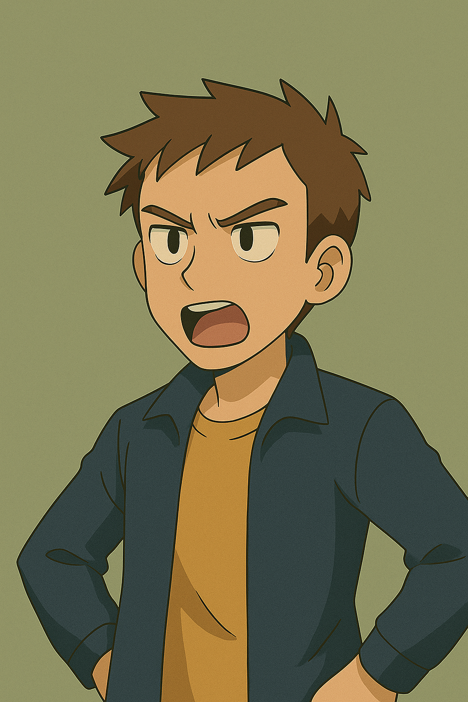
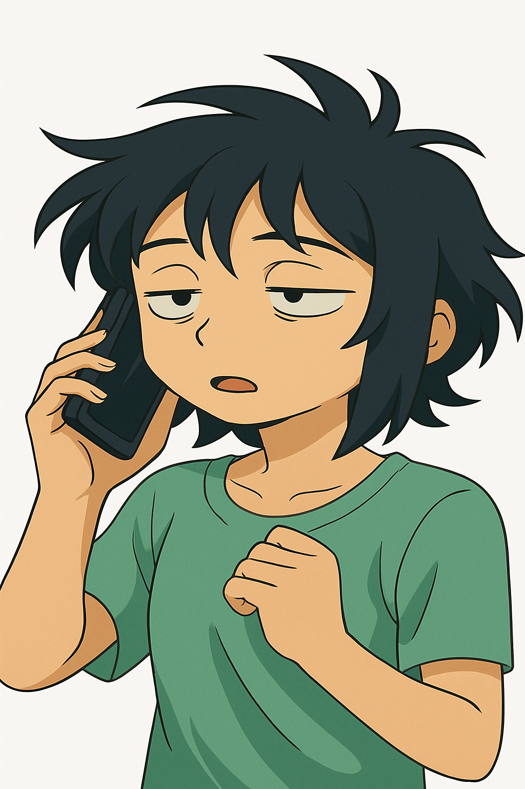
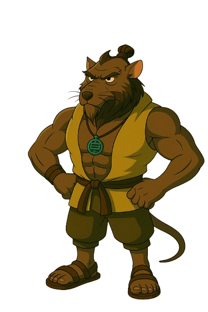

Historia
A história se passa em São Paulo, uma cidade infestada de poluição, a infestação ocorreu em 2025, mas piora a cada ano, a história se passa em 2033
com dois jovens que querem salvar o mundo, Mas terão que enfrentar Edwin, Edwin pretende desenvolver uma forma de vida que coesiste apenas em estados completamente tomados
pelos ambientes toxicos, esse experimento de edwin tem consciencia propria e toma ambientes verdes e os destroi. morgana, david, ana e iris, iram tentar parar edwin e esse
experimento brutal.
Personagens
David

David é um dos protagonistas, é uma pessoa altruista, que sempre quer ver o melhor das pessoas
por mais que ele não tenha paciencias, com os eventos que acontecem, david procura solucionar o
problema, mas ele sabe que possivelmente não ira conseguir sozinho.
Morgana

Morgana é uma das protagonistas que tentam revitalizar o corrego com david,
mas acaba que morgana é bem pessimista e fica colocanddo o grupo para baixo com bastatnte frequencia
alem de querer desistir a quaquer custo, mas ela ajuda no qeu consegue.

Ana
Ana é uma das personagens acrescentadas futuramente, Ana tem problemas diretamente com Edwin.
Por causa desse problema, ela se unie aos protagonistas para acabar com edwin.
Iris

Iris é umas das personagens acrescentadas para o desenvolvimento e ruina de edwin,
iris faz uma dupla com ana, as duas se conhecem a muito tempo e tiveram um passado em comum
iris fara de tudo para acabar com edwin
Edwin

Edwin